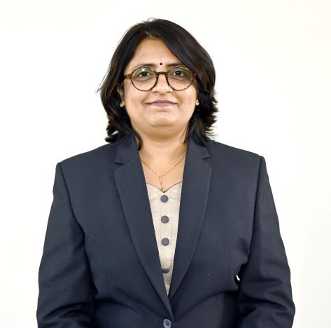

Dr. Parul Madhuraj Jadhav
Program Director

Program Director
Dr. Parul Jadhav is an associate professor with almost 30 years of experience at Dr. Vishwanath Karad MIT World Peace University. She has held various roles in academics, restructuring, research, operations, and accreditation, and has successfully led several portfolios at the Faculty of Engineering and Technology (FoET). Dr. Jadhav's research interests include Artificial Intelligence, Machine Learning, Deep Learning Architecture, Video and Image Analytics, Compression Techniques, and Signal Processing. She has published over 30 papers in international journals/conferences, holds three patents, and has multiple datasets/copyrights. Her research has been recognized through grants from organizations such as the Department of Science & Technology, BCUD, ASPIRE, and KIRAN Division - Women Scientists Scheme. She designed the Post Graduate Diploma in AI&ML, which was created in collaboration with Infosys, and has established many Labs across universities, where she is regarded as an expert in embedded signal processing. She has also conducted many faculty development programs and is a reviewer for Elsevier and IEEE journals. Dr. Jadhav contributed significantly to academic restructuring at the FoET, aligning the academic structure of engineering programs with the National Education Policy framework. She was instrumental in implementing Outcome Based Education (OBE) processes, training and change management, and computing learning outcomes through courses and assessments. Dr. Jadhav has also been at the forefront of national and international accreditation for the department. She completed her Bachelor’s, Master’s, and Doctoral degrees with an exemplary academic record from College of Engineering Pune (CoEP) and has received numerous awards and recognition for her work. She is an outgoing person with excellent leadership capabilities and has good connections with peers, students, and seniors.
Signal Processing, AI-ML, Computer Vision
Profiles